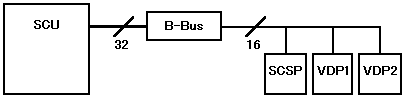
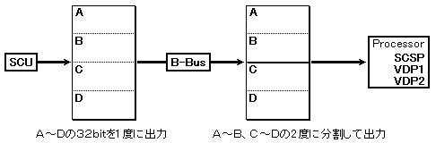
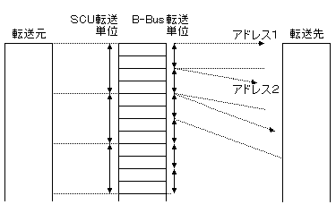

★HARDWARE Manual
★SCUユーザーズマニュアル
★3.1 レジスタ一覧
★HARDWARE Manual
★SCUユーザーズマニュアル
★3.1 レジスタ一覧
| bit | 31 | 24 |
23 | 16 |
15 | 8 |
7 | 0 | ||||||||||||||||||||||||
25FE0000(レベル０) 25FE0020(レベル１) 25FE0040(レベル２) |
− | − | − | − | − | １ | ２ | ３ | ４ | ５ | ６ | ７ | ８ | ９ | 10 | 11 | 12 | 13 | 14 | 15 | 16 | 17 | 18 | 19 | 20 | 21 | 22 | 23 | 24 | 25 | 26 | 27 |
| bit | 31 | 24 |
23 | 16 |
15 | 8 |
7 | 0 | ||||||||||||||||||||||||
25FE0004(レベル０) 25FE0024(レベル１) 25FE0044(レベル２） |
− | − | − | − | − | １ | ２ | ３ | ４ | ５ | ６ | ７ | ８ | ９ | 10 | 11 | 12 | 13 | 14 | 15 | 16 | 17 | 18 | 19 | 20 | 21 | 22 | 23 | 24 | 25 | 26 | 27 |
| bit | 31 | 24 |
23 | 16 |
15 | 8 |
7 | 0 | ||||||||||||||||||||||||
25FE0008(レベル０) |
− | − | − | − | − | − | − | − | − | − | − | − | １ | ２ | ３ | ４ | ５ | ６ | ７ | ８ | ９ | 10 | 11 | 12 | 13 | 14 | 15 | 16 | 17 | 18 | 19 | 20 |
| bit | 31 | 24 |
23 | 16 |
15 | 8 |
7 | 0 | ||||||||||||||||||||||||
25FE0028(レベル１) 25FE0048(レベル２) |
− | − | − | − | − | − | − | − | − | − | − | − | − | − | − | − | − | − | − | − | １ | ２ | ３ | ４ | ５ | ６ | ７ | ８ | ９ | 10 | 11 | 12 |
 |
DMA転送レジスタの転送バイト数の読み込み禁止 |
| bit | 31 | 24 |
23 | 16 |
15 | 8 |
7 | 0 | ||||||||||||||||||||||||
25FE000C(レベル０) 25FE002C(レベル１) 25FE004C(レベル２) |
− | − | − | − | − | − | − | − | − | − | − | − | − | − | − | − | − | − | − | − | − | − | − | １ | − | − | − | − | − | ２ | ３ | ４ |
DxRA(x=2−0) | 内 容 |
0 | 加算しない。 |
1 | 4Byte加算する。 |
DxWA(x=2−0) | 内 容 |
000B | 加算しない |
001B | 2Byte加算する |
010B | 4Byte加算する |
011B | 8Byte加算する |
100B | 16Byte加算する |
101B | 32Byte加算する |
110B | 64Byte加算する |
111B | 128Byte加算する |
図3.6 SCU-プロセッサ間の通信単位

図3.7 SCU-プロセッサ間の転送具体例

図3.8 書き出しアドレス加算値の指定

| 外部エリア４領域（A-Bus I/Oエリア）→ | 0b,1b の設定が可能です |
| その他 → | 1b の設定のみ可能です |
| WORKRAM-H → | 010b の設定が可能です |
| 外部エリア１〜３領域 → | 010b の設定が可能です |
| 外部エリア４領域（A-Bus I/Oエリア）→ | 000b,010b の設定が可能です |
| VDP1,VDP2,SCSP → | すべての設定が可能です |
| 外部エリア１〜４領域(A-Bus) → | 010b の設定が可能です |
| VDP1,VDP2,SCSP(B-Bus) → | 001b の設定が可能です |
| WORKRAM-H(C-Bus) → | 010b の設定が可能です |
| bit | 31 | 24 |
23 | 16 |
15 | 8 |
7 | 0 | ||||||||||||||||||||||||
25FE0010(レベル０) 25FE0030(レベル１) 25FE0050(レベル２) |
− | − | − | − | − | − | − | − | − | − | − | − | − | − | − | − | − | − | − | − | − | − | − | １ | − | − | − | − | − | − | − | ２ |
| bit | 31 | 24 |
23 | 16 |
15 | 8 |
7 | 0 | ||||||||||||||||||||||||
25FE0014(レベル０) 25FE0034(レベル１) 25FE0054(レベル２) |
− | − | − | − | − | − | − | １ | − | − | − | − | − | − | − | ２ | − | − | − | − | − | − | − | ３ | − | − | − | − | − | ４ | ５ | ６ |
起動要因ビット(x=2−0) | 起 動 要 因 | ||
DxFT2 | DxFT1 | DxFT0 | |
0 | 0 | 0 | 許可ビットのセット and V-ブランク-IN信号受信 |
0 | 0 | 1 | 許可ビットのセット and V-ブランク-OUT信号受信 |
0 | 1 | 0 | 許可ビットのセット and H-ブランク-IN信号受信 |
0 | 1 | 1 | 許可ビットのセット and タイマ0信号受信 |
1 | 0 | 0 | 許可ビットのセット and タイマ1信号受信 |
1 | 0 | 1 | 許可ビットのセット and サウンド-Req信号受信 |
1 | 1 | 0 | 許可ビットのセット and スプライト描画終了信号受信 |
1 | 1 | 1 | 許可ビットのセット and DMA起動ビットのセット |
★HARDWARE Manual
★SCUユーザーズマニュアル
★3.1 レジスタ一覧